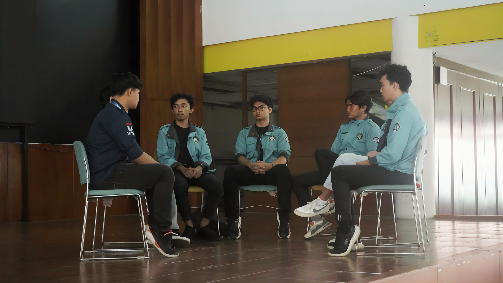
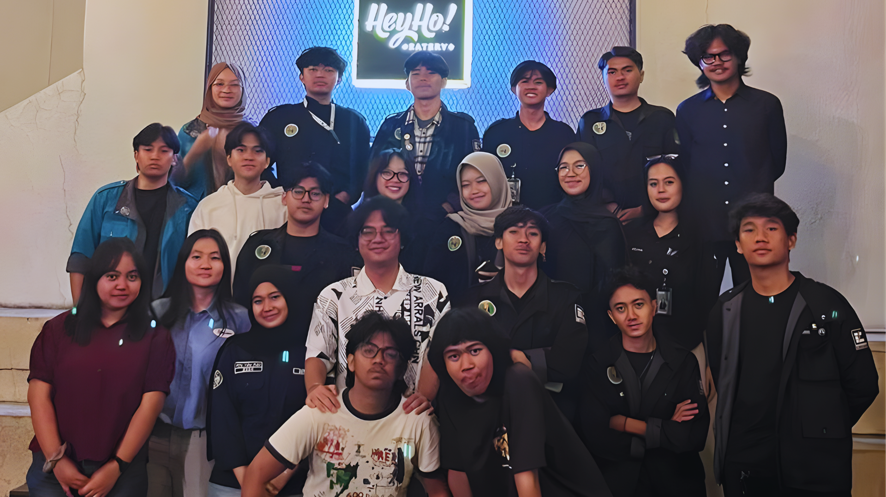
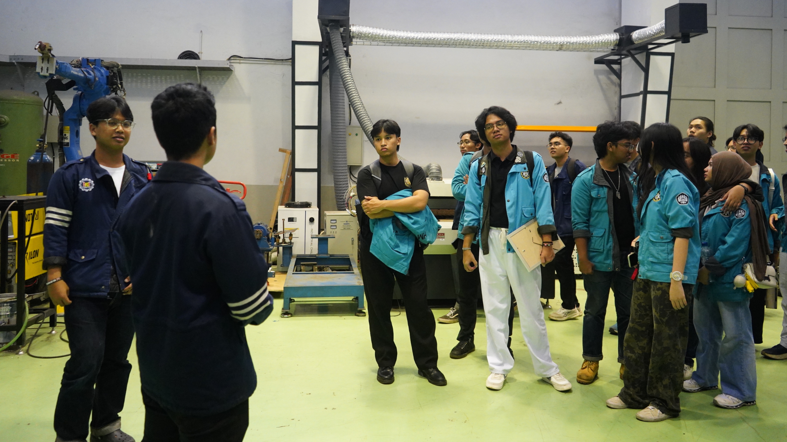

The Mission
University Explore (UNEX) is traditionally viewed as a casual organizational visit. As the Project Officer, I completely redefined this objective. The goal was no longer just about networking; it was about strategic academic comparison, observing industrial-standard equipment, analyzing foreign academic systems, and gathering data for future career prospects. My mandate was to execute 2 benchmarking events. Through aggressive negotiation and strategic alignment, my team and I successfully executed 3 high-impact cross-university expeditions.
Execution I: The Business Perspective
Partner: HIMA MBTI Telkom University | Date: May 17, 2025 | Delegation: 165 Participants
For our first expedition, we orchestrated a massive cross-city convoy bringing 79 delegates from HMTE Unpad to the Telkom GSG. Instead of choosing a traditional engineering counterpart, I spearheaded a strategic pivot to collaborate with Management of Business Telecommunications and Informatics (MBTI). While electrical engineering focuses heavily on technicalities, MBTI excels at the managerial and business side of technology. This provided our engineering students with a crucial, fresh perspective on tech-business management.
As the inaugural run, we faced rapid operational challenges—from sudden rundown adjustments to on-the-fly MC briefings. Managing a crowd of 165 people demanded agile crisis management, but the resulting cross-divisional Focus Group Discussions (FGDs) laid a solid foundation for our future operations.

Cross-divisional Focus Group Discussion with HIMA MBTI Telkom University.
Execution II: The Exclusive Deep-Dive
Partner: HME UPI | Date: November 5, 2025 | Delegation: 15 Key Personnel
Volume II was an exclusive, high-level diplomatic exchange. We stripped away the massive crowds and strict formalities, bringing only 8 core personnel (7 staff + 1 head) from our Relations Department to meet HME UPI. UPI’s engineering association is highly unique because they successfully merged four different study programs into a single, unified entity.
This session was designed as an open-ended, deep-dive benchmarking discussion. However, real-world logistics tested our planning. The UPI delegation faced severe, unexpected traffic delays along the Cileunyi-Jatinangor route, arriving an hour and a half late. We utilized this delay to refine our questioning matrix, resulting in a highly intensive, boundary-free discussion on organizational restructuring and inclusive leadership that lasted far longer than standard FGDs.

Group photo session after intensive benchmarking session with the exclusive delegation from HME UPI.
Execution III: The Pride & Legacy
Partner: HMM ITB | Date: November 30, 2025 | Delegation: 102 Participants
The grand finale of the UNEX 2025 roadmap. We targeted HMM ITB, an association legendary for its deeply rooted alumni network and institutional pride. Despite the timing—clashing with end-of-term LPJ preparations and unavoidable weekend scheduling conflicts—we secured a solid delegation of 47 HMTE personnel, successfully meeting our strategic KPI of at least 50% cabinet representation.
As a 9-year-old organization standing face-to-face with a nearly 79-year-old institutional giant, HMTE Unpad had much to learn about legacy building. We absorbed their blueprints for alumni management, which is critical for tracking graduate employment, boosting accreditation, and fostering inter-generational communication. Furthermore, we gained exclusive access to their mechanical manufacturing labs. Observing how machine components are fabricated provided our electrical engineering students with vital cross-disciplinary insights. The sheer institutional pride radiating from HMM ITB was overwhelming in the best way possible—it left our delegation profoundly inspired to elevate our own standard of excellence.

Exploring the mechanical manufacturing labs and observing industrial-standard equipment at HMM ITB.
The Aftermath
By treating UNEX not as a leisure trip but as an aggressive data-gathering and networking operation, we successfully upgraded HMTE Unpad’s internal blueprints. Overcoming logistical nightmares, dynamic rundowns, and scheduling constraints taught me that true leadership in project management is defined by adaptability and a relentless pursuit of value.